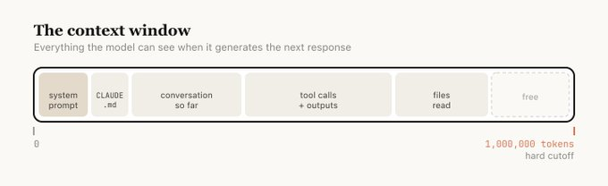

Rules, tools, tips.
A companion reference to the harnessing workshop. Rules are the principles you hold. Tools are what you reach for. Tips are the small calibrations that turn a toy into leverage.
Ask Claude.
Before Google, before docs, before the teammate you don't want to bother. Ask Claude. It doesn't judge, it's instant, and it's usually right. The reflex to ask first is the single most important habit on this page. Everything that follows is leverage stacked on top of that reflex.
Before any of this.
Most people would be twenty percent more productive tomorrow if they installed a launcher with clipboard history and wrote ten snippets, before touching AI at all. The pre-AI productivity ceiling is embarrassingly low for most knowledge workers, and part of why the AI wins feel big is that the baseline was so slow.
If you don't already have these, fix them first. The ROI is immediate and doesn't depend on any model you'll have to re-learn every six months.
- A launcher. Raycast (my pick) or Alfred. Keyboard-first access to apps, files, calculations, unit conversions, web searches, window management. Replaces half your dock and most of your trips to Spotlight.
- Clipboard history. Built into Raycast and Alfred, or Clipy standalone. Your clipboard becomes a paste buffer for the last 50 things you copied. You will not go back.
- Snippets / text expansion. Also in Raycast and Alfred, or Espanso free. Pick any prefix you like (I use
!!). Type!!em, get your email address. Type!!sig, get your signature. Type!!follow, get your follow-up email template. Even your first-pass planning doc can be a snippet. I have a!!specthat expands into a fully-structured brief template I then fill in.
AI is leverage on top of a workflow. If the workflow is "alt-tab between twelve tabs and retype the same phrases every day," fix that first. Claude doesn't compound on top of broken plumbing, and you'll feel smarter about the AI part once the basics aren't actively fighting you.
Plan before you build.
Not plan before you prompt. Plan before you build. The distinction matters. I never sit down and write a markdown spec by hand before a task. I plan by talking to Claude, and then I let the conversation produce the plan as an artifact.
Where planning happens vs. where execution happens
Claude Desktop or Claude Cowork
Conversational. Interruptible. Good at asking clarifying questions, pushing back on assumptions, and summarizing a long discussion into a clean spec. This is where the shape of the work gets decided.
Claude Code
Execution-oriented. It wants to do the thing. Great for writing the code, writing the doc, running the analysis. Bad for open-ended "let's think about this." It'll try to solve before you've finished describing.
The workflow I use for new projects is two steps. First, a long Q&A chat in Claude Desktop where I describe the rough idea and have Claude interview me in depth: tradeoffs, concerns, UX, technical choices, edge cases. The result is an idea.md file that captures the decisions. Second, I hand that idea.md to Claude Code in a fresh terminal session and let it execute.
"Interview me in detail using AskUserQuestion about literally anything: technical implementation, UX, concerns, tradeoffs. Make sure the questions are not obvious. Be very in-depth, keep interviewing until it's complete, then write the plan."
Plan mode inside Claude Code
Once a project is kicked off and you're mid-work, Claude Code has its own plan mode (activated with shift+tab twice). Use it for bigger changes within an existing project: anything that touches more than two or three files, or anything where you want to see the approach before letting Claude loose on the codebase. It prevents Claude from over-eagerly starting implementation before you've aligned on direction.
Rule of thumb: Desktop for figuring out what to build. Code for building it. Plan mode when the building needs its own mini-plan.
If it's not written down, it's not real.
The single biggest shift that separates people who compound with Claude from people who don't is this: they have Claude constantly writing markdown files. Meeting notes. Decisions. Research. Specs. Project status. Their beliefs. Their goals. Everything that normally lives as ephemeral thought-gas becomes a file.
Not because they love filing systems. Because context that's written down is context Claude can use tomorrow. A decision you made in a chat two weeks ago is invisible to the next chat unless it's in a file. A research rabbit-hole you went down last month is lost unless Claude wrote the summary to disk. Your preferences, constraints, and working style are useless to tomorrow's Claude if they only live in your head.
What to have Claude write down, starting today
- Decisions. When you settle something (pricing, a naming choice, a positioning call), ask Claude to append it to a
decisions.mdwith the date and the reasoning. - Meeting summaries. Paste the transcript or your notes, ask for a one-page markdown summary with action items. Save to a folder. Never lose a meeting again.
- Research. Every time you go down a rabbit hole, have Claude produce the written summary at the end. That's the thing that's reusable. The chat itself is disposable.
- Who you are and how you work. Your role, your goals, your no-gos, your writing voice. One file Claude reads before every session. This alone changes what you can expect from it.
The medium matters. Markdown specifically is the format where LLMs and humans meet most cleanly. LLMs parse it natively without losing structure, and humans read it at a glance the same way they read a well-written email. Headings, bullets, bold, links. It's portable (any editor, any OS), version-controllable (free history in Google Docs, Notion, or git), and it works across every Claude surface.
Copy the personal seeding prompt to paste into your chats
Paste this once at the top of any long chat (or save it as a snippet with !!me). Fill in the bracketed fields. You only have to do it once per chat; Claude will carry the context forward for the rest of the session.
Here's context about me and how I work. Please keep this in mind for the rest of our conversation. **About me** - Role: [your role] - Company: [company name + one line on what it does] - I work primarily on: [what fills your day] **How I communicate** - Tone: [direct / detailed / casual / formal] - Languages: [English / mixed with German / etc.] - Length preference: [short / thorough / depends on task] **What I reward** - [e.g., concrete recommendations with tradeoffs] - [e.g., admitting when you don't know] - [e.g., pushback when my logic has holes] **What frustrates me** - [e.g., generic advice that doesn't engage with my specifics] - [e.g., over-hedging, "it depends" answers] - [e.g., emojis, corporate speak] **Where to find more context** - Team shared wiki: [Notion link to Team AI Context page] - My current projects: [short list or link] Always check the team wiki link above before answering anything that involves company-specific info. Then help me with: [your actual task].
Treat Claude as a colleague, not a mind-reader.
The people who get mediocre results from Claude brief it the way they'd brief Siri: a vague sentence, maximum five seconds of thought, and then disappointment when the output is generic. The people who get great results brief it the way they'd brief a smart colleague who joined the team this morning: enough context to do a good job, clear outputs, stated constraints, one good example.
Claude is not omniscient. It can't read your intent. It has no idea what "done" looks like for you unless you say so. It doesn't know your company's tone, your prospect's industry, your ten previous attempts at the same task. The ceiling on Claude's output is the quality of your brief.
"Write me a follow-up email to this prospect."
Goal: book a 30-min second call within two weeks. Input: call transcript below. Output: one email, 80–120 words, three paragraphs. Tone: warm but not over-friendly. References two specific things from the call. Avoid: generic "circling back" openers, pricing talk, emojis.
Same model. Ten seconds more effort. The second one ships; the first one gets rewritten. If you've written a good brief once, save it as a skill (see below) and never write it again.
Colleagues learn new things. Express-onboard them.
A real colleague doesn't pretend to know everything on day one. They ask to read the doc, check the deck, skim the playbook, then come back up to speed. Claude is the same. If there's something Claude needs to know (a new product launch, a prospect's company site, a long internal doc, a PDF that just went out), paste the link or upload the file and say "review this, then we work."
It takes twenty seconds. It saves the next hour of half-informed output. Think of it as express-onboarding a new hire. Same mental model, faster ramp.
Claude Desktop vs. Claude Code.
Same underlying model. Completely different surface. Both are useful; they're for different moments of your day.
Claude Desktop (and Claude.ai / Cowork)
The chat app. Best for thinking out loud, planning, research, drafting, anything that's more dialogue than execution. Non-engineers feel at home here because it's just a chat. This is the right starting point for most BD, marketing, ops, and strategy workflows.
Reach for it when: you want to talk through a problem, draft something with iteration, or onboard yourself to a new topic.
Claude Code
A terminal-based agent. It can read and write files on your machine, run shell commands, call APIs, use skills, orchestrate subagents. More powerful, more opinionated, more execution-oriented. Requires a bit of setup but unlocks everything in the "Tips" section below.
Reach for it when: the task involves real files, repeated workflows, skills, or anything you want Claude to actually do rather than just discuss.
The honest recommendation for someone starting out: live in Desktop for a week. Get comfortable with long chats and uploaded files. Then, the first time you think "I do this every day, I wish it happened automatically." That's when Code earns its keep.
The Claude Chrome extension.
When you want Claude to do something inside your browser (navigate to a page, fill a form, pull info from a tab you're already logged into, take a screenshot), you reach for the Claude Chrome extension. It's Claude with access to your actual browsing session, including your logged-in state on Gmail, LinkedIn, Notion, and whatever else.
A small habit that makes it cleaner: keep Chrome dedicated to Claude. Use Arc, Safari, Firefox, or a separate Chrome profile for your actual daily browsing, and leave the default Chrome profile empty except for the sites you actually want Claude to touch: Gmail, LinkedIn, your CRM, your Notion. This way the extension's agent-mode has a clean surface with only the tabs it needs, and your personal browsing stays separate. I use Arc for everything and Chrome is basically a "Claude's browser." It stays empty until I want Claude to do something in it.
One safety note: the extension asks before taking destructive actions (sending, deleting, posting), but it can still do things you'd rather it not. Run it with supervision, not in the background, until you trust its patterns on your specific workflows.
Skills.
A skill is a reusable brief you save once and Claude picks up automatically when the task matches. Technically it's a folder (with a markdown file at minimum, optionally scripts and assets) that Claude Code reads when its description matches what you're trying to do. The practical effect: you stop re-explaining the same task every time.
A real skill. The first few lines of one of mine.
This is the header of a skill I use every day. It files external sources (URLs, PDFs, files) into my personal knowledge base. You're looking at the minimum viable anatomy: frontmatter, a short body, dispatch rules. The rest of the file is ~150 more lines of mode-specific steps.
---
name: brain-ingest
description: "Ingest an external source (URL, file, folder, or inbox item)
into Marko's personal knowledge base at ~/Documents/Obsidian/brain/.
Use when the user says anything like 'ingest this', 'save this to the
brain', 'remember this article', 'add this paper to my notes', 'process
my inbox', pastes a URL or file path for filing, or asks to add a new
project to the brain."
argument-hint: "<url> | <file-path> | <dir-path> | inbox | (empty for menu)"
user-invocable: true
model: sonnet
allowed-tools: [Read, Write, Edit, Glob, Grep, Bash, Agent, ToolSearch,
mcp__tavily__tavily_extract]
---
# Brain Ingest
Ingest an external source into ~/Documents/Obsidian/brain/.
## Bootstrap (every invocation, no exceptions)
1. Read ~/Documents/Obsidian/brain/CLAUDE.md (the schema)
2. Read ~/Documents/Obsidian/brain/index.md (the catalog)
3. Parse the argument and any flags (--fast, --draft)
## Dispatch by source type
| Argument shape | Mode |
|-------------------|-------------------------------|
| starts with http | URL mode |
| is a file path | File mode |
| is a directory | Directory mode (auto-draft) |
| "inbox" | Inbox mode |
| empty | Menu mode |
...
The description field is the most important part. It's not a summary for humans. It's what Claude scans to decide whether this skill applies to the current task. Make it concrete: "when the user asks for X", "when Y is mentioned", or list the exact phrases. Vague descriptions mean Claude won't trigger the skill when it should.
Writing tips
- Don't state the obvious. Claude already knows most of what it knows. A skill earns its keep by pushing it toward non-default behavior: your org's preferences, your specific gotchas, the edge cases you keep hitting.
- Build a gotchas section over time. Every time the skill fails in a specific way, add the lesson. The "Gotchas" section is the highest-signal part of any mature skill.
- Don't railroad. Give Claude the information it needs, not a rigid step-by-step script. Skills are reused across slightly different situations; over-specification makes them brittle.
- The folder is the feature. Your skill can include script files, reference markdown, templates, example outputs. Claude reads them when it needs them. The best skills are folders, not just one file.
Anthropic's public skills. Good starters.
Anthropic publishes a curated set of skills at github.com/anthropics/skills. A few worth installing on day one:
Where your team's skill shelf lives: one shared Google Doc or Notion page is the pragmatic default for a non-engineering team (each skill is a heading, the markdown body below). A shared Drive folder or a Google Chat space pinned with new skills both work as alternatives. Upgrade to a git repo when engineering's ready to help.
CLAUDE.md and agentic memory.
Claude has no persistent memory by default. Every new chat starts fresh. CLAUDE.md is the file that fixes this for Claude Code. It loads automatically at the start of every session, so Claude reads it before it reads anything else in the folder.
The important thing to understand is what CLAUDE.md is for. It's a character sheet, not a manual. It describes identity (role, voice, what this agent optimizes for), locked decisions (things that should never change across sessions), and then a thin index of other files Claude can reach for on demand. Target length: about 100 lines. If yours is over 200, you've put the equipment manual where the character sheet belongs. Move reference material out into sibling files and leave a pointer.
Don't write it yourself
Inside any folder, run /init in Claude Code. Claude interviews you and writes the first CLAUDE.md for you. From there, make it a habit: at the end of every working session, ask Claude to update the CLAUDE.md and a progress.md with what just changed. The CLAUDE.md absorbs new locked decisions; the progress.md is the rolling diary of what's been shipped. This is how your project's brain stays current without you nagging it.
For Claude Desktop and Claude.ai users, the equivalent lives in Projects: create a project, attach files that carry context (about-me.md, brand-voice.md, current-projects.md, team-wiki.md), and every chat inside that project inherits them.

What to put in your CLAUDE.md
- Identity. Role, what this agent is for, voice, what it optimizes for. Top 10–20 lines.
- Locked decisions. Tech stack, naming conventions, no-gos, positioning calls that shouldn't change across sessions.
- Your rules. Short, actionable. "Always quote paths with spaces." "No emojis in code." "Default to German for user-facing copy."
- Thin file index. One line per sibling file (DECISIONS.md, ARCHITECTURE.md, progress.md). Pointers, not contents.
What NOT to put in it
- Your whole personal biography. That belongs in a team-level context file or a personal brain folder, not in every project's CLAUDE.md.
- Long tutorials or tool manuals. Put those in sibling files (TOOLING.md, SETUP.md) and reference them.
- Week-over-week state. That belongs in progress.md or similar, so CLAUDE.md stays stable.
- Brain content. If you have a personal knowledge base (see below), reference it from CLAUDE.md. Don't copy pages into every project.
Advanced move: give Claude a brain
Andrej Karpathy published a short note on a personal "brain" pattern that's worth reading. The idea: create a folder (brain/ or memory/) with markdown files tracking people you've met, decisions you've made, projects in flight, beliefs you hold, open questions. Reference that folder from your CLAUDE.md so every new chat can pull from it on demand.
The compounding effect is real. Every week the brain has more. Every chat starts from a richer context than the last. What was "I should remember this" becomes "Claude already knows." It's the single highest-leverage piece of infrastructure you can build for yourself once you've been using Claude seriously for a few weeks.
Not everyone needs this on day one. But the first time you notice yourself re-typing the same context across three different projects. That's the signal. Consolidate it into a brain, point your CLAUDE.md files at it, and stop repeating yourself.
Permissions.
Claude Code asks for permission before running tools: reading files, writing files, running shell commands, fetching URLs, calling an MCP server. For new users this feels relentless: you're approving "read this file" twenty times per session and starting to lose the plot of what you were doing. That's safety by default, but it's not the best long-term mode for you.
The fix: teach Claude which things you've already blanket-approved for a folder or a tool. Permissions live in a settings file: ~/.claude/settings.json globally, or .claude/settings.json inside any project. You don't have to edit it by hand. Ask Claude to do it for you.
Claude will make the edit and explain what it did. From that point on, the obvious stuff stops interrupting you.
Safe to auto-approve vs. keep asking
- Read-only file tools:
Read,Grep,Glob,Ls - Read-only shell:
ls,cat,head,tail,pwd,git status,git diff,git log - Public fetches: Tavily search, web docs
- File writes:
Edit,Write,NotebookEdit - Mutating shell: anything that changes files or state
- Destructive commands:
rm,git push --force, dropping tables,git reset --hard - Anything touching shared infrastructure or production
You can also scope permissions per-folder: "always allow Bash in this project but ask everywhere else." Rule of thumb: relax permissions where the blast radius is small; keep them tight where mistakes cost you. Your own sandbox folder is small-radius. A shared CRM or production database is not.
Session economics.
Every conversation with Claude burns tokens, and every plan has a cap. On the $20/month tier you will hit session limits. Fast, if you let a single chat sprawl for hours. These are the moves that stretch a subscription.
Pick the right model for the task
Claude ships in tiers. Haiku is fastest and cheapest, good for simple drafts, summaries, short questions, and anything where you'd happily accept "good enough." Sonnet is the workhorse, your default for most real work. Opus is the heaviest model. Reserve it for genuinely hard reasoning across a lot of context, or when Sonnet has already failed. Using Opus to ask "what day is it" is throwing tokens away.
Dial thinking intensity
Claude Code has thinking budgets you can ask for by name. think is light. think hard is more. ultrathink is maximum. Every level burns more tokens. Most tasks don't need ultrathink. It's for multi-step reasoning, architectural decisions, or debugging something slippery. For writing a memo, drafting an email, or summarizing a doc, default thinking is plenty.
Use subagents for heavy lifting
When a task involves reading a lot of material (scraping a site, digesting a big PDF, running a broad search across your codebase), dispatch a subagent instead of doing it in your main chat. The subagent burns its own tokens, does the work, and returns a summary. Your main session only sees the result, not the forty pages of raw material. This is how Anthropic's own engineers manage their context budgets, and it's the single biggest move for keeping long sessions efficient.
Compact or clear long sessions
Every turn of a conversation re-sends the prior context. Long sessions get expensive fast. Use /compact to summarize the conversation so far (Claude distills it and continues with the distilled version), or /clear to start fresh with only what matters. Doing this proactively (before you hit the wall) is much cheaper than being forced to by the limit.
Be specific upfront
A vague prompt leads to back-and-forth clarification, which burns tokens on every turn. Three rounds of "actually what I meant was…" costs more than a clear brief in the first message. This is Rule 3 applied to your wallet.
Your first week.
Pick one thing. Ship it. Tell your team what you picked.
By Sunday night
Ship one skill. One of your repeat tasks. Thirty minutes to write. Save it into your team's shared Notion page.
By next Friday
The team has five. Share yours. Steal theirs. Your team's shelf is real.
If you get stuck
- If you can't pick a task, pick the one you'd most hate explaining to a new hire on their first day. That's the one.
- If the skill is bad, use it anyway. Fix tomorrow's version.
- If you don't have time, write a five-line version on your phone during a meeting you shouldn't have been in. That's the MVP.
- If you're not sure it's working, show it to one teammate. If they laugh and then ask for a copy, you shipped something.
Links worth bookmarking.
People and pages I found genuinely useful while putting this together. Drop in when you want to go deeper on any of it.